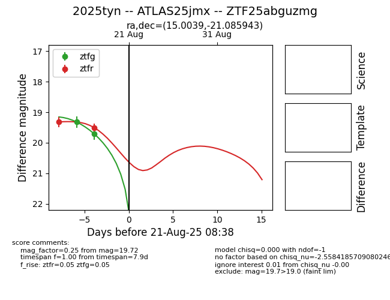

Target 2025tyn at 2025-08-21 08:38, see:
FINK: fink-portal.org/ZTF25abguzmg
Lasair: lasair-ztf.lsst.ac.uk/objects/ZTF25abguzmg
ALeRCE: alerce.online/object/ZTF25abguzmg
TNS: wis-tns.org/object/2025tyn
YSE: ziggy.ucolick.org/yse/transient_detail/2025tyn
alt names
ZTF25abguzmg (ztf,alerce)
2025tyn (tns,yse)
ATLAS25jmx (atlas)
coordinates:
equatorial (ra, dec) = (15.0039,-21.08594)
galactic (l, b) = (141.3299,-83.64900)
photometry
last ztfg=19.72, ztfr=19.50
2 ztfg, 2 ztfr detections
